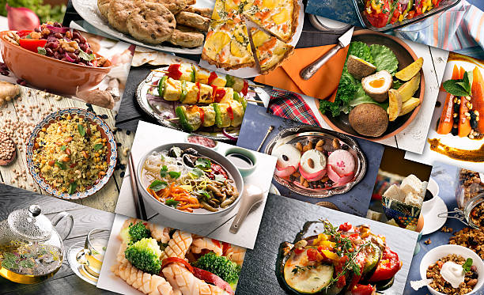
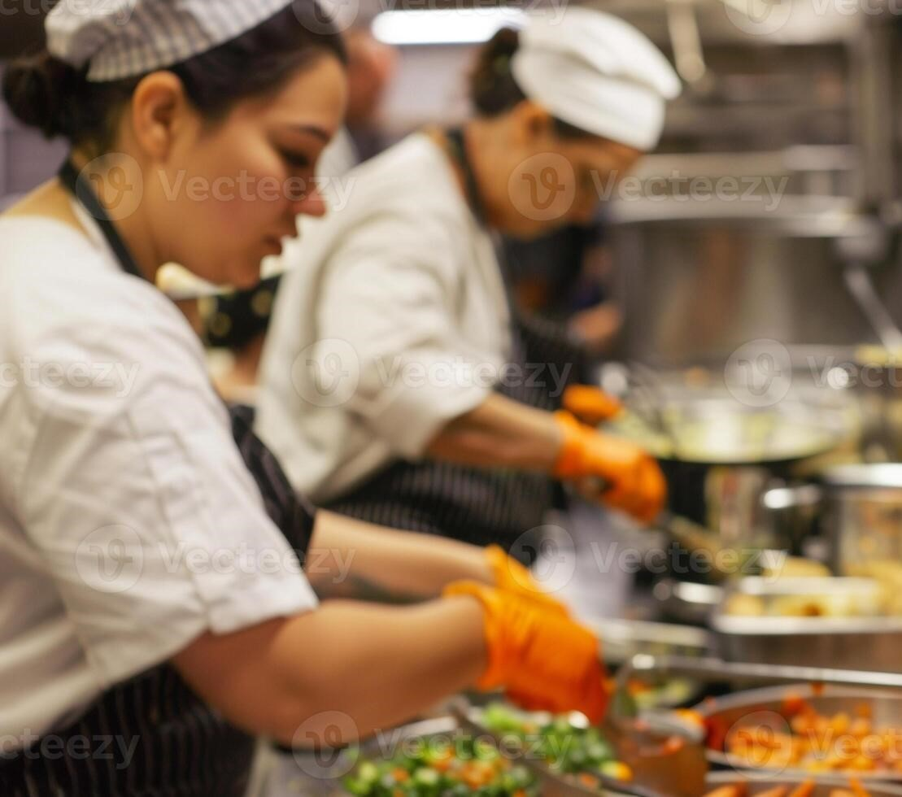

Discover the World of Recipes
Explore delicious recipes from various cuisines, each with its unique flavors and styles.
Food Culture Around the World
Food is more than just sustenance; it is a reflection of culture, history, and tradition. Across the world, every dish tells a story, each flavor carrying the essence of its origin. From the delicate sushi of Japan to the hearty pasta of Italy, food connects us to our past and brings us together in the present. No matter where we go, food is a universal language that binds us together, allowing us to share and celebrate different cultures.
Our Mission
At Foodie's Paradise, our mission is to bring the world’s diverse culinary delights to your home. We aim to make cooking an exciting journey, where you can discover new flavors, try new techniques, and explore the rich culinary heritage of different cultures. We believe that food has the power to connect people, foster creativity in the kitchen, and bring joy to families and communities alike. Join us on this culinary adventure and let’s cook, share, and enjoy together!